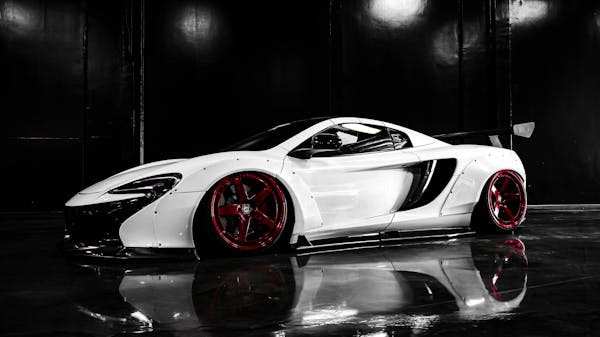

McLaren 650S Widebody Liberty Walk
A McLaren 650S, equipada com o kit Widebody da Liberty Walk, é uma das supermáquinas mais impressionantes do mundo. Com seu motor V8 biturbo de 3.8 litros, produz 650 cavalos de potência e é capaz de acelerar de 0 a 100 km/h em apenas 3 segundos. O que a torna ainda mais especial é o visual arrojado, com o body kit da Liberty Walk, que a transforma em uma verdadeira obra de arte sobre rodas.
A parte frontal, com uma aerodinâmica agressiva e os arcos de roda mais largos, conferem ao carro uma presença imponente. O trabalho da Liberty Walk dá um toque único, com detalhes que tornam o modelo ainda mais esportivo, incluindo os spoilers e difusores que aumentam a estabilidade a altas velocidades.
No interior, a McLaren não deixa a desejar, com uma cabine focada na experiência do piloto. Os bancos esportivos em couro, os controles intuitivos e a tecnologia de ponta garantem que cada segundo dentro do carro seja emocionante.
Esta versão Widebody da McLaren 650S Liberty Walk oferece a combinação perfeita entre performance extrema e um design imbatível. Um verdadeiro monstro das estradas.